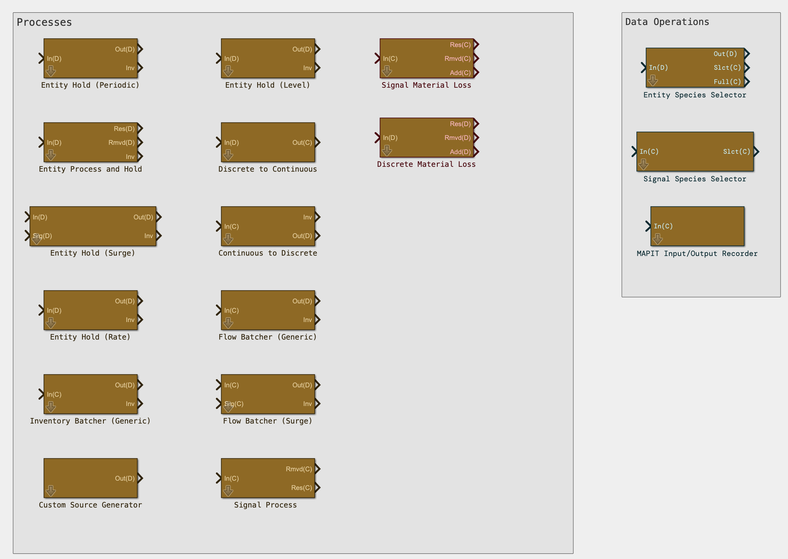
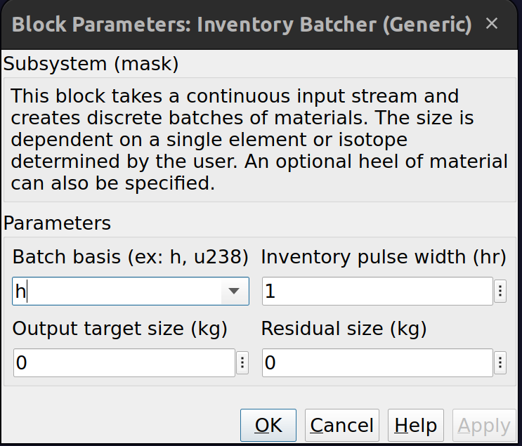

Introduction#
The Fissile Facility Flow Modeler (F3M) is a largely open source library of plug-and-play modules (blocks) intended to facilitate the development of nuclear facility models in MATLAB Simulink for safeguards research. F3M is designed for modeling material flows and operations for a variety of different facility types without specific operational details. Blocks expose parameters that correspond to generic properties such as batch target size, residual/heel size, processing time, and separation efficiencies but does not describe the dimensions or mechanics for how this process might be carried out. The most relevant details for safeguards research are material flows, quantities, and timings, which is the primary focus of this library.
The purpose of these documents is to describe the design philosophies behind and implementation of F3M. Users who become familiar with these documents should then be able to construct a complete generic model of a simple nuclear facility if provided the correspond flow sheet. This guide starts with important design concepts before providing a brief introduction to a simple model (Getting Started) followed by important considerations for robust model design (Compute Concerns). Finally, we invite users to contribute to the development of F3M through the addition of new modules. Some basic contribution guidelines are provided.
Completed models using the F3M library are available in a separate software component called the Separation and Safeguards Performance Model Library (SSPM-L). SSPM-L is controlled unclassified information (CUI) and is only available upon request. Please contact MAPIT-dev@sandia.gov for more details.
Architecture#
Design#
The primary object of F3M is to simulate the flow of nuclear material in a facility. This is accomplished by representing a flow sheet as a series of discrete unit operations. Since F3M is primarily concerned with flow magnitude and timing, blocks in the F3M library lack specific operational details such as tank dimensions or solution temperatures.
Tip
Ports on F3M blocks (locations where blocks are connected together) have either a (C) or (D) label to indicate that a port is either continuous (signal) or discrete (entity). Inventory calculations always result in output ports that are continuous.
F3M tracks 1675 different isotopes that correspond to most isotopes tracked in the SCALE code system. There are also two additional unassigned, user configurable slots at index 1676 and 1677. By default, the configurable slots have no impact on the operation of F3M blocks, but allow for further user customization. For example, slot at index 1676 might indicate how many times an item has passed through a loop. F3M implements tracking of the isotopic indices and user configurable slots as a single array with shape \([1677,1]\). The public version of F3M does not include any isotopic concentration data and requires users to bring their own data or otherwise specify source data. The developers do have a ready-made spent fuel isotopic database for use in F3M, but it is distributed on a case-by-case basis. If you are interested, contact the developers at MAPIT-dev@sandia.gov.
Note
F3M includes several convenience functions to help make accessing data easier. For example, F3_getArrayPos can be used to return the array position(s) of the element or isotope string.
Example
Elemental and isotopic specification in F3M is done by referencing elemental or isotopic letter from the elemental table. When specifying isotopes, do not use a hyphen; specify as u or u238. Retrieving a specific isotope returns a single index whereas retrieving an element returns multiple indices. These indices correspond to all isotopes of that element and must be summed to find the total quantity of interest for that element.
F3M also provides the keyword all to select all isotopes. The additional user defined attributes are accessed by specifying at1 or at2 which correspond to index 1676 and 1677 respectively.
F3_getArrayPos('u238')
ans =
1601
>> F3_getArrayPos('u')
ans =
1593 1594 1595 1596 1597 1598 1599 1600 1601 1602 1603 1604 1605
Material flows in F3M are either continuous (e.g., flow of solution through a pipe), discrete (e.g., periodic recept of input materials), or somewhere in between (e.g., a tank that periodically fills and empties). Discrete representations are performed using Simevents entities whereas continuous representations are done using Simulink signals.
F3M uses discrete representations in the form of entities wherever possible. Entities often result in faster model simulations and better numerical consistency (see this section for further details) and often have a more intuitive representation. Specifically, entities are discrete units with attributes that move throughout the model. In F3M, they have primarily have a single attribute, isovec, that contains the isotopic masses that the entity represents.
As a concrete example, consider fresh fuel storage area that accumulates fresh fuel over time. The inventory of the fresh fuel storage area is conveniently represented using a signal (i.e., the inventory can be represented as a continuous quantity over time). Tracking inventory with discrete fresh fuel entities would be straightforward; arriving entities add their |isovec| value to the inventory where as departing fresh fuel entities would remove their isovec from the inventory signal.
In contrast, a continuous representation of a fresh fuel assembly is more difficult to model. Simulink signals originate from a signal generator that can create a variety of signal shapes. One straightforward representation of an item would be a square pulse that integrates to the total mass of the item. There is infinitely many combinations of pulse width and pulse height that could integrate to an item’s value, but determining which combination of pulse width and height is not readily apparent. There are additional challenges with integrating such continuous representations which is described further in the compute section.
However, there are some places where continuous representations make sense and are even required. For example, consider a tank that periodically fills and empties some solution. The flows in and out could each be represented by a square pulse. The amplitude would be zero when there was no flow and non-zero when there is flow. The amplitude would then correspond to the flow. Integration of the square pulse over an interval of time would result in the total amount of material entering or leaving the tank for that interval.
F3M is designed to simulate system-level safeguards-relevant data streams that can be readily used with the Material Accountancy Performance Indicator Toolkit (MAPIT). MAPIT calculates key safeguards metrics like inventory difference or cumulative inventory difference. F3M has been designed to interface with MAPIT without the need for extensive setup by the user. MAPIT requires data for each key measurement point used in a material balance calculation. This includes input, output, and inventory terms. Flow terms, which are often input and/or output terms, require careful consideration as they must be correctly integrated to calculate the correct material balance value. Inventory terms provided by most F3M blocks can be simply recorded using a To Workspace block from the base Simulink library with a sample time of 1 and a format of Structure with Time. However, flow terms require the use of the MAPIT Input/Output Recorder block.
Note
MAPIT only supports only flows for inputs and outputs as of v1.4.6, although a future update will enable discrete items to also be used.
Implementation#
F3M is consists of a series of lego-like blocks that are designed to be connected together to collectively form a nuclear facility model that focuses on flows and timing of nuclear material. An example of some of the blocks can be seen below.
{kind=link}
The blocks are designed to be reused for multiple processes by changing their parameters. For example, an entity process and hold could represent an evaporation or separation process depending on how the block parameters are setup. F3M is designed such that every block has a easy-to-use mask to control key parameters. An example of the F3M mask dialog is shown below.
{kind=link}
Units#
Simulink and Simevents don’t make assumptions about the units of the underlying model. Time steps can be anything, seconds, minutes, hours, or whatever is required. The most important thing is that units are consistent across blocks or otherwise properly converted. In our examples, F3M assumes units of kg for mass, hours for time (i.e., 1 time-step = 1 hour), and liters for volume.